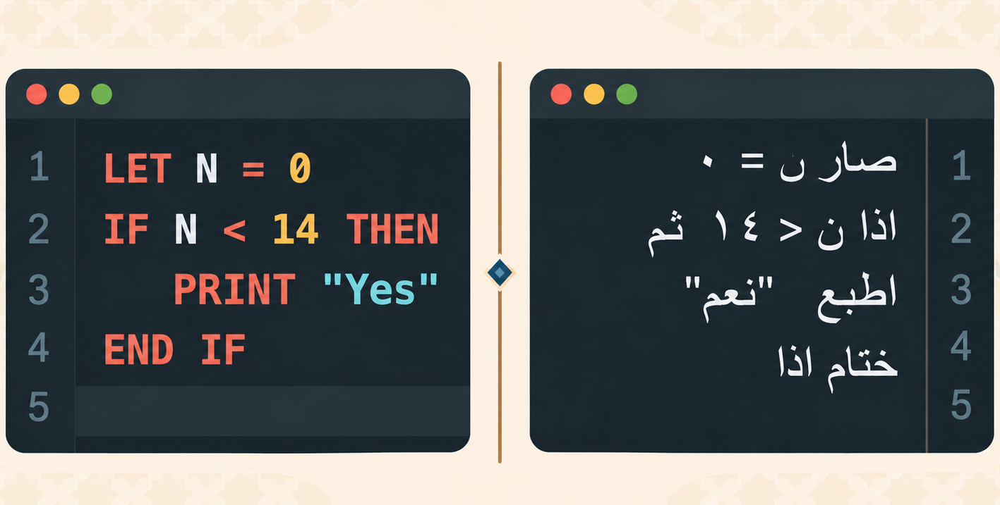

What if programming spoke Arabic?
برمجة آمنة بلغتك الأم
ArabicBASIC is an experiment in what programming can look like when Arabic is part of the language itself — not just the interface, the tutorial, or the explanation around code.

Why this question matters
Most programming languages assume English and the Latin script. Keywords, standard libraries, documentation, error messages, and the surrounding culture of practice all carry that assumption forward. For people whose primary language is not English, this adds a step: before you can think about the problem, you have to translate the tools.
That step is not insurmountable. People learn to program in languages other than their own every day. But it is a step that programming-language design has rarely treated as a choice rather than a given. I wanted to know what changes when Arabic is not only the language used to explain code, but the language the code is written in.
Why Arabic, and why BASIC?
Arabic is a compelling case for this question. Its script runs right to left, its letters join and change shape depending on their neighbours, it has no upper and lower case, and its written form spans a spectrum from the formal register of Modern Standard Arabic through regional varieties. All of these become practical engineering concerns when Arabic is the surface syntax of a programming language, not just text inside string literals.
BASIC is a useful setting for the experiment because its vocabulary is small and its structure is legible. A BASIC interpreter has around two dozen keywords and a handful of control-flow forms. That compact surface keeps the language-design decisions visible instead of burying them in a large feature set. The point is not to compete with modern general-purpose languages, but to have a clear enough canvas that the design questions stand out.
Not just translated keywords
Replacing English keywords with Arabic ones is the most visible change, but it is not the deepest one. ArabicBASIC is an interpreter whose programs use Arabic keywords and identifiers, accept Eastern Arabic–Indic numerals (١٢٣), and whose editor must handle right-to-left text, mixed-direction lines, and Arabic punctuation alongside Latin operators — all while keeping the program's logical structure intact.
صار ن = ٥
اذا ن > ٣ ثم
اطبع "أهلاً"
ختام اذاThe design work reaches into questions that English-based languages rarely need to ask. What should a variable name look like in a script with no letter case? How should the editor move the cursor through a line that mixes Arabic words with = and >? When a language's everyday spelling includes multiple accepted forms of the same word — اذا and إذا, for example — which should the parser accept? These are not obstacles to overcome so much as features of the design space that English-first programming-language design has never had to explore.
What exists now
ArabicBASIC is a working, standalone interpreter written in Java. It parses programs with ANTLR 4, executes them with a hand-written tree visitor, and ships as a native executable with installers for macOS, Windows, and Linux. The desktop app bundles an Arabic-first editor built on CodeMirror 6: syntax highlighting, error underlines, completion, hover information, and an interactive session panel, all in a dedicated window with proper right-to-left text layout.
A language server speaks the Language Server Protocol so editors and tools can offer diagnostics and completion. The interpreter's output uses the Arabic locale for numbers. Error messages are available in Arabic and English. The design is guided by a small set of principles — among them, that a programming language should do what you mean, and that computing should be safe in your own language.
What I hope comes next
I want to ground the language's keyword choices in evidence — using corpus linguistics to understand how Arabic speakers actually use the words that become programming constructs, and how register, diglossia, and orthographic variation shape those choices. I want to grow the Arabic-language learning materials, examples, and teaching resources so that Arabic is present in the learning experience as well as the program syntax. I want to learn from people using it: Arabic speakers, learners, educators, and language designers who can tell me where the language and tools help and where they still create friction.
I want to keep improving the full experience of programming in Arabic — the editor, the diagnostics, the installation, the documentation — because those practical details determine whether a language is usable day to day. And in the longer term, I hope to explore whether ideas from ArabicBASIC can support experiments with programming languages shaped around other linguistic communities and local needs. That is an aspiration, not a feature of the current interpreter. For now, ArabicBASIC is one working answer to one question. I want to see where it leads.
Read the project details
The interpreter, the desktop app, installation, examples, and build instructions are all documented in the repository.